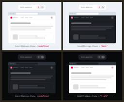

CSS-Tricks
https://css-tricks.com
CSS-Tricks is where folks around the world come to learn about front-end code and everything related to it, including HTML, CSS, and yes, CSS.
フィード
Resolved: CSS Class Prefix Selector
CSS-Tricks
A newly resolved proposal would allow us to select classes that are a prefix for variations with a wildcard, like .prefix-*.Resolved: CSS Class Prefix Selector originally handwritten and published with love on CSS-Tricks. You should really get the newsletter as well.
1日前
CSS Navigation Matching, Early Days
CSS-Tricks
Apply a style when someone navigates from one specific page to another. The idea being it'd make the sources for cross-document view transitions declarative in CSS rather than managing that stuff in JavaScript.CSS Navigation Matching, Early Days originally handwritten and published with love on CSS-Tricks. You should really get the newsletter as well.
3日前
WordPress.com Student Plan
CSS-Tricks
As someone who teaches beginning web development, I find that building a WordPress site makes for a great final project. Hosting those projects has always been a roadblock though.WordPress.com Student Plan originally handwritten and published with love on CSS-Tricks. You should really get the newsletter as well.
3日前

Dark mode toggles: two states are enough 1
1
CSS-Tricks
Lea's pushing back on light/dark mode implementations that display three state options for visitors: light, dark, and system.Dark mode toggles: two states are enough originally handwritten and published with love on CSS-Tricks. You should really get the newsletter as well.
5日前

What’s !important #17: Custom Highlight API, CSS Navigation Matching, Fixing text-stroke, and More
CSS-Tricks
Plus, how to style skeleton UIs, how to enable diagonal scrolling, how images can overflow themselves, and yet, still more. Basically, how to do a lot of really cool (CSS) stuff.What’s !important #17: Custom Highlight API, CSS Navigation Matching, Fixing text-stroke, and More originally handwritten and published with love on CSS-Tricks. You should really get the newsletter as well.
8日前
Blocked aria-hidden: The Warning is Right, and Every Fix You’ve Found is Wrong
CSS-Tricks
The warning is correct. And the recommended fixes you've probably seen are wrong. Here's what you can do instead to properly fix the issue.Blocked aria-hidden: The Warning is Right, and Every Fix You’ve Found is Wrong originally handwritten and published with love on CSS-Tricks. You should really get the newsletter as well.
10日前
Animating CSS border-image
CSS-Tricks
Border images are an overlooked feature. One neat fact is that border image slices can run across entire borders on an element, and animating it creates beautiful effects.Animating CSS border-image originally handwritten and published with love on CSS-Tricks. You should really get the newsletter as well.
12日前
SmashingConf Freiburg 2026, September 7-10
CSS-Tricks
Smashing Magazine’s in-person conferences are back and returning to the wonderful city of Freiburg next month, September 7–10.SmashingConf Freiburg 2026, September 7-10 originally handwritten and published with love on CSS-Tricks. You should really get the newsletter as well.
12日前
Using and Styling the Dialog Element
CSS-Tricks
There's a lot of nuance to the <dialog> element, a seemingly little piece of web architecture. I've got some notes from digging into it.Using and Styling the Dialog Element originally handwritten and published with love on CSS-Tricks. You should really get the newsletter as well.
15日前
2026 State of CSS, Devs Surveys
CSS-Tricks
A few notes and takeaways from the 2026 State of CSS survey results, including a nice CSS-Tricks cameo!2026 State of CSS, Devs Surveys originally handwritten and published with love on CSS-Tricks. You should really get the newsletter as well.
16日前
Gap Decorations Are Now Available, Here’s What’s New
CSS-Tricks
Today, with CSS gap decorations fully supported in Chrome and Edge, starting with version 149, you can now very easily style gaps, and with a lot of control.Gap Decorations Are Now Available, Here’s What’s New originally handwritten and published with love on CSS-Tricks. You should really get the newsletter as well.
19日前
Get Ready For the Powerful CSS border-shape Property!
CSS-Tricks
We recently got the shape() function and corner-shape property. What else could we possibly need as far as making shapes in CSS? Let me tell you: the border-shape property!Get Ready For the Powerful CSS border-shape Property! originally handwritten and published with love on CSS-Tricks. You should really get the newsletter as well.
22日前
What’s !important #16: sibling-index() Animations, Use Cases for the infinity Keyword, Container Stuck Queries, and More
CSS-Tricks
The soon-Baseline sibling-index() function for animations, CSS and the 2026 FIFA World Cup, use cases for the infinity keyword, container "stuck" queries, and more.What’s !important #16: sibling-index() Animations, Use Cases for the infinity Keyword, Container Stuck Queries, and More originally handwritten and published with love on CSS-Tricks. You should really get the newsletter as well.
22日前
writing-mode
CSS-Tricks
The writing-mode CSS property sets whether lines of text are laid out horizontally or vertically, and the direction in which blocks and lines progress..element { writing-mode: vertical-rl;}This is most useful in languages such as Chinese, Japanese or …writing-mode originally handwritten and published with love on CSS-Tricks. You should really get the newsletter as well.
1ヶ月前
pointer-events
CSS-Tricks
The pointer-events property controls whether an element can become the target of pointer events like clicks, hover states, and other pointer-based events. In other words, it lets you decide whether the browser should treat an element as interactive when the …pointer-events originally handwritten and published with love on CSS-Tricks. You should really get the newsletter as well.
1ヶ月前